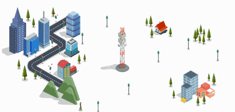
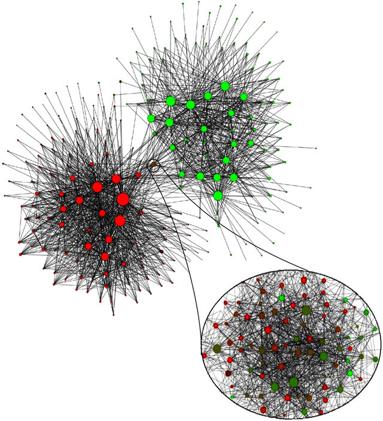
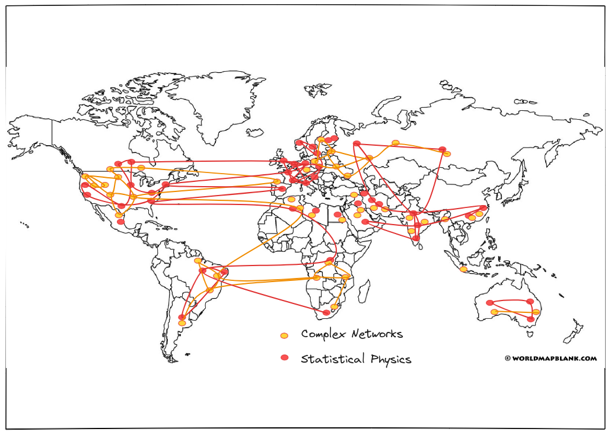
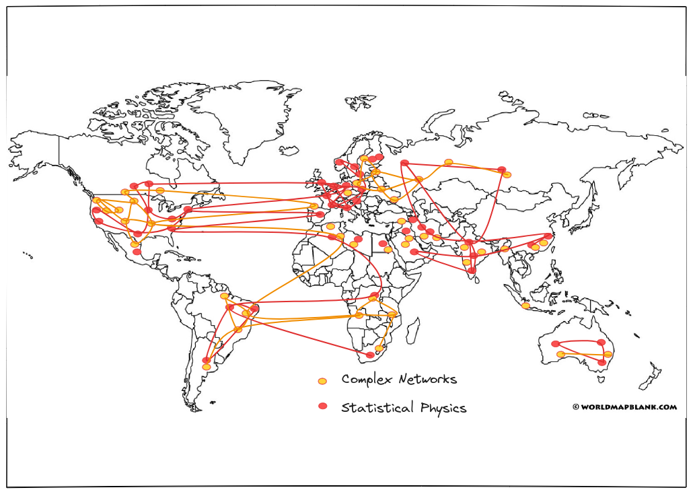
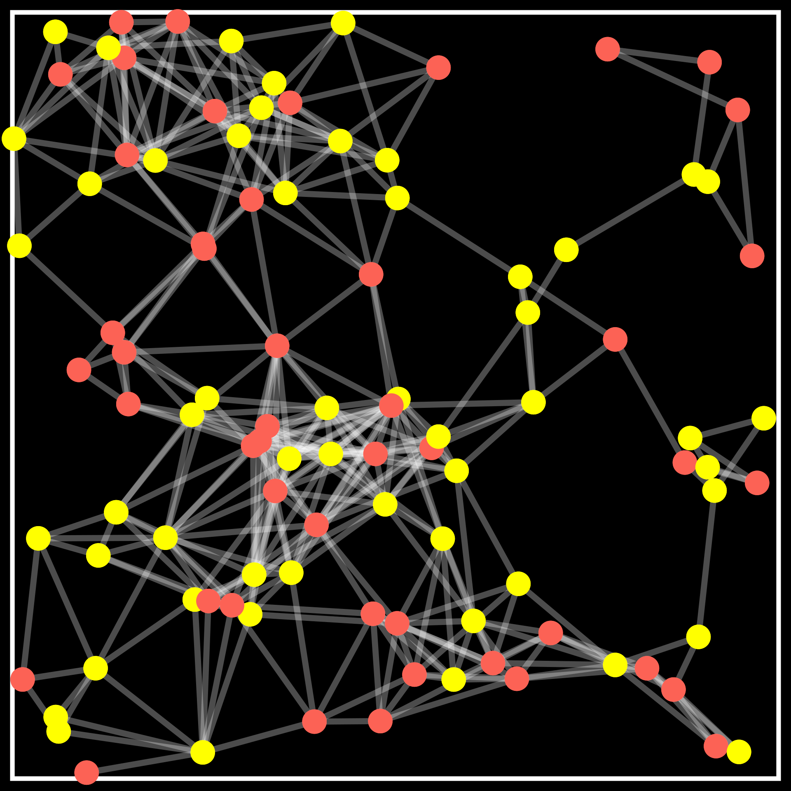
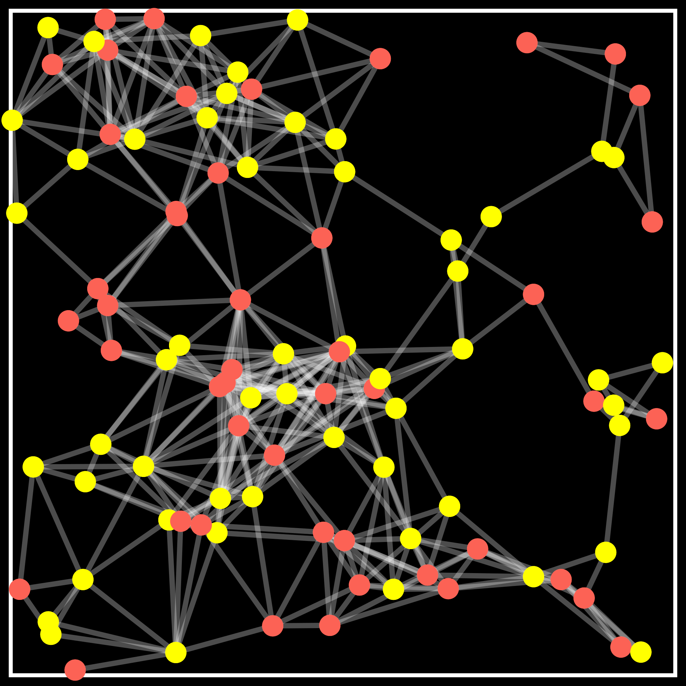
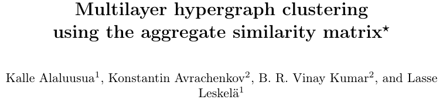

Community detection on geoemtric graphs
B. R. Vinay Kumar
Indian Institute of Technology-Bombay
January, 2025
Mumbai, India
Background
Capture real-world phenomena using ideas from random graphs and network science.
Wireless networks
Social networks Data science
Background
Capture real-world phenomena using ideas from random graphs and network science.
Wireless networks
Social networks
Data science
- Geometric graphs? Vertices are embedded in a metric space and edges depend on the distance between nodes.
- Presence of short edges and abundance of triangles.
Questions?
- How does the network structure affect processes or information on the network?
- Can local algorithms help to solve a global problem?
- Does geometry help in solving a global problem efficiently?
Probabilistic broadcast with coded packets
\(\hspace{15cm} k\) data packets
\(\hspace{15cm} n\) coded packets
- Goal Broadcast the $k$ data packets from the source with minimum transmissions.
- Coding scheme: Any node receiving at least $k$ out of the $n$ coded packets is able to recover the $k$ data packets from the source.
Spatial Queues


J. Kang, C. Kan, and Z. Lin, “Are Electric Vehicles Reshaping the City? An Investigation of the Clustering of Electric Vehicle Owners’ Dwellings and Their Interaction with Urban Spaces,” ISPRS International Journal of Geo-Information, vol. 10, no. 5, May 2021.
Model
- Charging stations distributed as a PPP
- Customers follow nearest neighbour mobility strategies
- Characterize overloaded servers in the system
- Load balancing for spatial queues?
Community detection
 



Community detection
Interactions depend on:
- Node communities
- Distance between nodes
Geometric dependence captured using a kernel
- Geometric kernel: \(\varphi_n: \mathbb{R}_+ \to [0,1]\).
- Connect two nodes at $X_u$ and $X_v$ with probability \(\varphi_n \big(\|X_u-X_v\|\big)\).
Examples:
- \(\varphi(r) = \mathbf{1}\Big\{r \le \sqrt{\frac{\log n}{n}} \Big\}\)
- General kernels
Model
Torus \( S=\left[\frac{-1}{2},\frac{1}{2}\right]^d\)


\(\mathbf{A}\) \(\sim GKBM(\lambda,n,d,p,q,\varphi)\)
- Poisson point process \(\mathbb{X}\)\(= \{X_u\}_{u=1}^N\) of intensity \(\lambda n\)
- Two communities: \( \sigma\)\( = \big(\sigma(1),\cdots,\sigma(N)\big)\) \[\mathbf{P}(\sigma(u)=\color{#f86d6d}{+1})=\mathbf{P}(\sigma(u)=\color{#ffde20}{-1}) = \frac{1}{2}\]
- Geometric kernel: \(\varphi: \mathbb{R}_+ \to [0,1]\)
- Connection probabilities:
- Within community: $p$
- Between community: $q$
Given locations \(\mathbb{X}\) and communities \( \sigma\)
\[A_{uv}=1 \text{ w.p. }\begin{cases} p \varphi\Big(\frac{\|X_u-X_v\|}{(\log n /n)^{1/d}}\Big) & \text{if } \sigma(u)=\sigma(v)\\ q \varphi \Big(\frac{\|X_u-X_v\|}{(\log n /n)^{1/d}}\Big) & \text{if } \sigma(u) \neq \sigma(v) \end{cases}\]
Problem Formulation
\(\mathbf{A}\) \(\sim GKBM(\lambda,n,d,p,q,\varphi)\)
Problem: Given the locations \(\mathbb{X}\) and the graph \(\mathbf{A}\), recover \( \sigma_n\) exactly.
 

Problem Formulation
\(\mathbf{A}\) \(\sim GKBM(\lambda,n,d,p,q,\varphi)\)
Problem: Given the locations \(\mathbb{X}\) and the graph \(\mathbf{A}\), recover \( \sigma_n\) exactly.
Prior work
- Abbe, E., Baccelli, F., and Sankararaman, A., 2021. Community detection on Euclidean random graphs. Information and Inference: A Journal of the IMA, 10(1), 109-160.
- Gaudio, J., Niu, X. and Wei, E., 2024. Exact community recovery in the geometric SBM. In Proceedings of the 2024 Annual ACM-SIAM Symposium on Discrete Algorithms (SODA), 2158-2184.
- Gaudio, J., Guan, C., Niu, X. and Wei, E., 2024. Exact Label Recovery in Euclidean Random Graphs. arXiv preprint arXiv:2407.11163.
Main results
Torus \( S=\left[\frac{-1}{2},\frac{1}{2}\right]\)
\(\mathbf{A}\) \(\sim GKBM(\lambda,n,p,q,\varphi)\)
Achievability: If \(\lambda \kappa >1\) and \(\lambda I_{\varphi}(p,q) > 1\), then there exists a linear time algorithm (in the number of edges) achieving exact recovery.
Impossibility: Idea
- Genie-based estimator: Given the communities of all nodes except the origin, find its community.


| In \( \mathcal{R}_s \) | Neighbours | Non-neighbours |
|---|---|---|
| Same | \(P_s^+ \sim \text{Poi}\big(\lambda \text{vol}(\Gamma_s) \log (n) pc_s \big)\) | \(P_s^- \sim \text{Poi} \big(\lambda \text{vol}(\Gamma_s) \log (n) (1-pc_s) \big)\) |
| Different | \(Q_s^+ \sim \text{Poi} \big(\lambda \text{vol}(\Gamma_s) \log (n) qc_s \big)\) | \(Q_s^- \sim \text{Poi} \big(\lambda \text{vol}(\Gamma_s) \log (n) (1-qc_s) \big)\) |
Impossibility: Idea
| In \( \mathcal{R}_s \) | Neighbours | Non-neighbours |
|---|---|---|
| Same | \(P_s^+ \sim \text{Poi}\big(\lambda \text{vol}(\Gamma_s) \log (n) pc_s \big)\) | \(P_s^- \sim \text{Poi} \big(\lambda \text{vol}(\Gamma_s) \log (n) (1-pc_s) \big)\) |
| Different | \(Q_s^+ \sim \text{Poi} \big(\lambda \text{vol}(\Gamma_s) \log (n) qc_s \big)\) | \(Q_s^- \sim \text{Poi} \big(\lambda \text{vol}(\Gamma_s) \log (n) (1-qc_s) \big)\) |
- Testing Poisson vectors: Prob. of error \(= n^{-\lambda \text{vol}(\Gamma_s) D_+(\mathbf{p},\mathbf{q})}\)
- Chernoff-Hellinger divergence: \[ D_+(\mathbf{p},\mathbf{q}) := 2\sum_{s = 1}^{\ell} \big[1-\sqrt{pq}c_s-\sqrt{(1-pc_s)(1-qc_s)} \big]\]
- Error probability \(\to n^{-\lambda I_\varphi(p,q)} \)
- Total number of errors \(\approx \lambda n^{1-\lambda I_\varphi(p,q)} \to \infty\) when \(\lambda I_{\varphi}(p,q) < 1\)
Achievability
Q. How to recover the communities exactly when \(\lambda I_{\varphi}(p,q) > 1\)?Three phase algorithm:
Recall \(\color{#FF7F50}{\kappa}\): maximum interaction distance- Divide into blocks of size \(\frac{\color{#FF7F50}{\kappa}}{2}\frac{\log n}{n}\).
- Recover exactly in an initial block.
- Propagate from a recovered block to an adjacent block and so on.
- Number of mistakes in each block is at most a constant.
- Genie-based correction step
Initialization Phase
Propagation Phase
Refinement Phase
Community detection on hypergraphs
Collaboration networks: higher-order interactions
Proposed and analysed a semi-definite programming (SDP) algorithm.
Obtained conditions on model parameters for community recovery.
Current and future research
- Graphs with node inhomogenities and long-distance edges.
- Joint parameter estimation and community detection.
- Detecting communities with no information of location or in the semi-supervised regime.
- Community detection and percolation.
- Statistical inference problems on random graphs
- Spectral and SDP algorithms.
- Load balancing on spatial queues.
List of Publications
- K. Avrachenkov, B. R. Vinay Kumar, and L. Leskelä, "Community Detection on Block Models with Geometric Kernels", Online: https://arxiv.org/abs/2403.02802.
- B. R. Vinay Kumar and L. Leskelä, "Spatial Queues with Nearest Neighbour Shifts", Performance Evaluation, p.102448, Oct 2024.
- B. R. Vinay Kumar, N. Kashyap and D. Yogeshwaran, "An Analysis of Probabilistic Forwarding of Coded Packets on Random Geometric Graphs", Performance Evaluation, p.102343, Feb 2023.
- B. R. Vinay Kumar and N. Kashyap, "Probabilistic Forwarding of Coded Packets on Networks", IEEE/ACM Transactions on Networking, vol. 29, no. 1, pp. 234 - 247, 2021.
- B. R. Vinay Kumar, "Spatial Queues with Nearest Neighbour Shifts", in Proc. International Teletraffic Congress (ITC 35), Turin, Oct 3-5, 2023.
- K. Alaluusua, K. Avrachenkov, B. R. Vinay Kumar, and L. Leskelä, "Multilayer Hypergraph Clustering using the Aggregate Similarity Matrix", 18th Workshop on Algorithms and Models for the Web Graph (WAW 2023), Toronto, May 23-26, 2023.
- B. R. Vinay Kumar, N. Kashyap, D. Yogeshwaran, "An Analysis of Probabilistic Forwarding of Coded Packets on Random Geometric Graphs", in Proc. 19th International Symposium on Modeling and Optimization in Mobile, Ad hoc, and Wireless Networks (WiOpt 2021), Oct 8-11, 2021.
- B. R. Vinay Kumar, N. Kashyap, "Probabilistic Forwarding of Coded Packets on Networks", in Proc. IEEE International Symposium on Information Theory (ISIT 2019), Paris, Jul 7-12, 2019.
- B. R. Vinay Kumar, R. Antony and N. Kashyap, "The Effect of Introducing Redundancy in a Probabilistic Forwarding Protocol", in Proc. 2018 National Conference on Communications (NCC 2018), IIT-Hyderabad, Feb 25-28, 2018.
Preprint
Journal
Conference proceedings
Thank you.